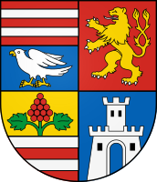

Flag

Coat of Arms
| Population | 782 216 |
| Males | 382 183 (48.86%) |
| Females | 400 033 (51.14%) |
| 0-14 years | 137 101 (17.53%) |
| 15-64 years | 520 926 (66.59%) |
| 65+ years | 124 189 (15.88%) |
| Major Nationalities | Slovak (80.22%), Hungarian (8.46%) |
| Major Religions | Roman Catholicism (48.39%), Atheism (20.70%) |
| Area | 6 754.3 km2 |
| Density | 115.81/km2 |
| Urbanisation | 53.45% |
| Largest Cities | Košice (225 044), Michalovce (35 584) |
| Highest Elevation | 1 476.5 m |
| Lowest Elevation | 93.7 m |
| Major Universities | Technical University of Košice, Pavol Jozef Šafárik University in Košice |
| Unemployment Rate | 9.3% |
| Average Monthly Earnings | EUR 1 415 |
| GDP Total | EUR 13.289 billion |
| GDP Per Capita | EUR 16 876 |